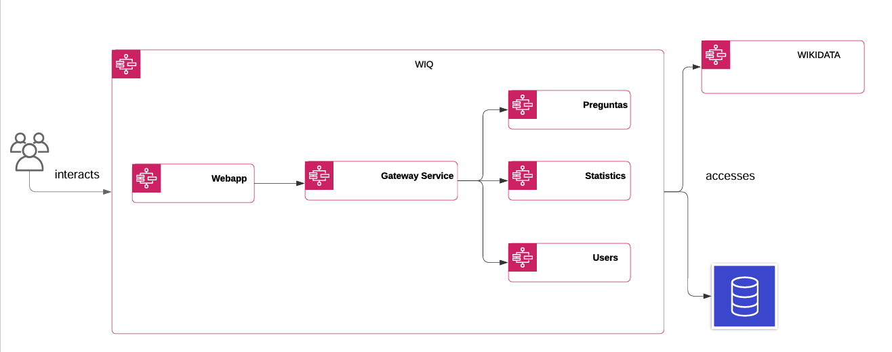
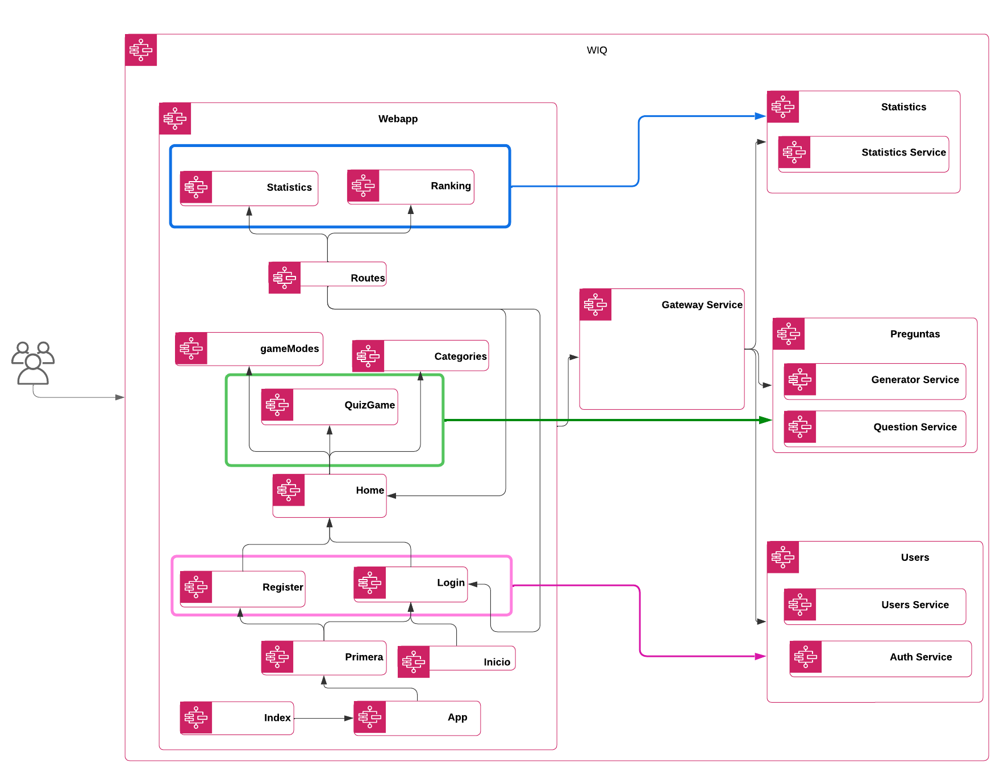

About arc42
arc42, the template for documentation of software and system architecture.
Template Version 8.2 EN. (based upon AsciiDoc version), January 2023
Created, maintained and © by Dr. Peter Hruschka, Dr. Gernot Starke and contributors. See https://arc42.org.
1. Introducción y objetivos
Wiq es un proyecto desarrollado por la Universidad de Oviedo, desarrollado por la empresa HappySw contratada por RTVE para la realización de una versión online de un concurso de preguntas y respuestas. La aplicación consiste en una serie de preguntas de diferentes categorías y temas generadas automáticamente a partir de datos de Wikidata. Los miembros del equipo de desarrollo son los siguientes:
1.1. Requisitos
-
Aplicación web con integración y despliegue continuos.
-
Los usuarios podrán registrarse en el sistema y consultar el histórico de participaciones.
-
Las preguntas serán generadas automáticamente con datos de Wikidata.
-
Las preguntas tendrán un tiempo límite.
-
Cada pregunta tendrá una respuesta correcta y varias incorrectas, todas ellas generadas automáticamente.
-
El sistema dispondrá de una API para acceder a la información de las preguntas y los usuarios.
1.1.1. Otros requisitos
-
La aplicación incluye diferentes temáticas sobre las preguntas. Esto permite que los usuarios puedan elegir que temática responder.
-
El sistema tiene varios modos de juego que podrán ser seleccionados por los jugadores.
-
Se permite ajustar parámetros de juego como el tiempo o el número de preguntas.
-
Existe un ranking de todos los usuarios de la aplicación donde se pueden ordenar por las estadísticas de cada uno.
1.2. Objetivos de calidad
| Objetivo de calidad | Motivación | Prioridad |
|---|---|---|
1 |
Privacidad |
El sistema garantizará la privacidad de los usuarios, para que sus datos no sean expuestos a terceras personas. |
2 |
Usabilidad |
La aplicación tiene que ser sencilla de utilizar para todas las personas aunque dispongan poco conocimiento sobre las tecnologías. |
3 |
Mantenibilidad |
La aplicación tiene que ser fácil de mantener, para añadir nuevas funcionalidades o cambiar las existentes, no se deberían tener que hacer muchos cambios. |
4 |
Testeabilidad |
Se utilizarán pruebas unitarias para garantizar el buen funcionamiento de la aplicación. |
5 |
Rendimiento |
Uno de los objetivos será que los tiempos de carga sean rápidos, con tiempos de respuesta bajos, para lograr una experiencia fluida durante la navegación. |
6 |
Disponibilidad |
Es importante que la aplicación esté disponible y accesible para los usuarios cuando la necesiten. Se intentará minimizar el tiempo de inactividad de la aplicación mediante un despliegue continuo |
1.3. Stakeholders
| Nombre | Descripción | Expectativas |
|---|---|---|
Equipo de desarrollo |
El equipo de desarrollo esta formado por los estudiantes miembros de este grupo |
Deberían desarrollar la aplicación con éxito en base a los requisitos puestos por la empresa |
Usuarios |
Personas que utilicen la aplicación. |
Los usuarios esperan que la aplicación funcione correctamente y que cumpla con los objetivos. |
Cliente |
Empresa que contrata el desarrollo de la aplicación. |
Se espera que la aplicación cumpla con los requisitos mencionados anteriormente. |
RTVE |
Empresa que contrata |
Tiene las mismas expectativas que que el equipo de desarrollo que funcione todo correctamente y sin ningún fallo |
2. Restricciones de arquitectura
2.1. Requisitos técnicos
| Constraint | Explicación |
|---|---|
Wikidata |
Las preguntas serán generadas automáticamente a partir de datos de Wikidata. |
GitHub |
Usaremos GitHub para mantener el proyecto en un repositorio remoto, comunicarnos, asignar tareas y documentar las actas. |
Docker |
El proyecto será desplegado a través de Docker. |
Pruebas |
Deberán ser implementadas pruebas de cobertura, aceptación y carga. |
Despliegue |
El sistema debe estar desplegado en un servidor, una máquina virtual. |
2.2. Restricciones organizativas
| Constraint | Explicación |
|---|---|
Miembros del grupo |
El proyecto se llevará a cabo en un equipo con 5-6 miembros que trabajarán de forma conjunta. |
Entregas |
El trabajo conlleva un calendario de entregas específico: |
Reuniones y acta |
Es obligatorio hacer una reunión de equipo en cada clase y tomar su correspondiente acta. |
2.3. Decisiones tomadas
| Constraint | Explicación |
|---|---|
Documentación |
Documentaremos el proyecto siguiendo el modelo arc42. |
Lenguajes |
Se usará NodeJS y React para implementar los distintos requisitos de la aplicación. |
Base de datos |
Se usará MongoDB como base de datos del proyecto. |
Idioma |
La documentación será en español. |
Actas |
Se rotará el miembro que toma las actas. |
Ramas |
Cada miembro del equipo trabajará en su rama de GitHub. |
Máquina |
La máquina será desplegada en Azure. |
3. Ámbito del sistema y contexto
3.1. Contexto de negocio
| Actor | Descripción |
|---|---|
Usuario |
Los usuarios interactuan con el sistema viendo y respondiendo preguntas |
Wikidata |
Las preguntas y sus respuestas se obtienen de wikidata |
3.2. Contexto técnico
| Interfaz | Descripción | I/O |
|---|---|---|
Usuario |
Los usuarios interactuan con el WebApp del sistema viendo y respondiendo preguntas |
Salida: acciones del usuario |
Azure |
La WebApp del sistema se despliega en Azure y muestra a los usuarios información obtenida de la API de Wikidata |
Entrada: acciones del usuario y datos de preguntas |
Wikidata |
El sistema llama a la API REST de wikidata para obtener los datos de las preguntas y respuestas que se generarán automáticamente |
Salida: datos de preguntas |
4. Estrategia de solución
El programa usado como solución consiste en una página en la que los usuarios pueden crear una cuenta a la que acceder para a una partida en la que tendran que responder varias preguntas. Se debe poder guardar tanto las preguntas como el ratio de aciertos del usuario en una base de datos.
Las partidas tendrán aproximadamente diez preguntas y cada pregunta mostrará cuatro opciones, siendo solo una la respuesta correcta. Cada pregunta tendrá una duración máxima de, aproximadamente, 30 segundos. Esto fue decidido para facilitar la generación de las preguntas y la jugabilidad.
La solución pensada originalmente consiste en usar Node.js y React para llevar a cabo la programación del sistema, usando consultas a Wikidata para realizar las preguntas y obtener las respuestas más actualizadas.
El uso de Wikidata para realizar las perguntas fue una de las limitaciones impuestas sobre nuestro proyecto. El uso de React y Node.js se debe a que el proyecto inicial dado estaba escrito usando dicho entorno y biblioteca de código y se decidió seguir usandolo para evitar problemas debido a errores de compatibilidad si se trataban de cambiar.
Si bién aun estar por confirmar, también se tenía pensado el uso de MongoDB para la base de datos. Se decidió usar este tipo de base de datos debido, en su gran mayoría, a la familiaridad con dicho sistema y debido que algunos de los objetos que se requieren guardar es más sencillo de hacer en una base de datos NoSQL.
5. Building Block View
5.1. Whitebox Overall System
5.1.1. Overview Diagram
5.1.2. Motivation
Se trata de un diagrama explicativo de la aplicación y sus componentes más importantes, así como la interacción entre ellos. El principal actor, el usuario, interactúa con la aplicación la cual consulta la base de datos de Wikidata para recuperar preguntas y sus correspondientes respuestas. Además, se utiliza la base de datos del proyecto para almacenar los resultados del usuario participante y para posibles inicios de sesión del mismo. Esto nos advierte de una división clara del proyecto en frontend, con la interfaz de usuario, y backend, para la lógica de negocio y consultas a recursos externos.
5.1.3. Contained Building Blocks
| Nombre | Descripción |
|---|---|
Usuario |
Actor principal, interatúa con la aplicación y proporciona sus datos. |
WIQ |
Se trata de nuestra aplicación, explicada en detalle más adelante. |
Wikidata |
Es una base de datos de conocimiento editada en colaboración. |
Base de datos |
Almacena la información necesaria para el correcto funcionamiento de la aplicación. |
5.1.4. Important Interfaces
Las interfaces más importantes son las encargadas de la interacción con el usuario, aunque irán cambiando a medida que el proyecto se desarrolle.
5.2. Level 2

5.2.1. Building blocks
| Nombre | Descripción |
|---|---|
Webapp |
Componente que alberga la interfaz de usuario, con la que interactua el usuario, además de la lógica de la aplicación. |
Gateway service |
Maneja y dirige peticiones desde la interfaz de usuario hasta los servicios. |
Preguntas |
Contiene dos servicios relacionados con el juego: generatorService y questionService. |
Statistics |
Contiene el servicio de las estadísticas. |
Users |
Contiene dos servicios: autenticación y usuarios. |
5.3. Level 3

5.3.1. Contained Building Blocks
| Nombre | Descripción |
|---|---|
Index |
Raíz del proyecto. |
App |
Contiene la estructura del proyecto con enrutamiento y proveedor de autenticación. |
Inicio |
Link a registro e inicio de sesión. |
Primera |
Pantalla de bienvenida. |
Register |
Registro de usuarios. |
Log in |
Permite al usuario iniciar sesión. |
Home |
Permite al usuario comenzar a jugar. |
Juego |
Pantalla donde se mostrarán las preguntas y respuestas. |
Game modes |
Permite seleccionar un modo de juego. |
Categories |
Permite seleccionar distintas categorías para jugar. |
Routes |
Proporciona las distintas rutas existentes. |
Statistics |
Pantalla con las estadísticas de los usuarios y su correspondiente lógica. |
Ranking |
Pantalla con el ranking de los usuarios y su correspondiente lógica. |
Gateway service |
Mananeja y dirige peticiones. |
User service |
Manejo de los datos de inicio de sesión |
Auth service |
Manejo de los datos de registro |
Generator service |
Servcio para la correcta generación de preguntas y respuestas. |
Question service |
Servicio para la correcta generación de la api de preguntas. |
Statistics service |
Servicio para el correcto manejo de estadísticas sobre los resultados de los usuarios. |
6. Vista de ejecución
6.1. Iniciar Sesión
Para el inicio de sesión el webapp mostrara la vista de inicio de sesión donde se le pedirá el usuario y la contraseña y se enviará los datos al servicio de registro el caul devuelve el token de sesión.

6.2. Juego
En el juego el usuario iniciara una partida haciendo una petición al servidor el cual generara preguntas con wikidata. Una vez se genera la pregunta se mostrara y el usuario deberá contestarla en un tiempo determinado. Tras esto se enviaran datos de la ronda y se almacenera en la base de datos.

6.3. Consulta a la API
Se hace una consulta a la API y esta retornara los datos.

7. Vista de Despliegue
7.1. Motivación
El sistema se desplegara en una maquina virtual de Azure, dentro de la maquina cada micro servicio que compone la aplicación, la base de datos y la web estarna desplegados en un contenedor docker ya que es como nos han proporcionado la integración continua inicial.
7.2. Características de Calidad y/o Rendimiento
Completar mas adelante
7.3. Componentes de la infraestructura
| Element | Description |
|---|---|
WebApp |
Es el frontend de nuestra aplicación al cual se accederá desde un navegador. |
ServiceGateway |
Es la REST API de nuestra aplicación a la cual se conecta WebApp y se podrá acceder desde el exterior para obtener datos de los usuarios.Esta parte junta todas las operaciones de los microservicios en un único puerto. |
8. Conceptos tranversales
8.1. Seguridad
Es un factor muy importate a tener en cuenta, ya que, al tener un registro de usuarios debemos poder guardar sus contraseñas, entre otras cosas, sin perderlas y sin que puedan ser descubiertas. Debemos intentar prevenir cualquier ataque y asegurar la integridad de los datos.
8.2. Persistencia de datos
La gestión y almacenamiento de datos de usuarios, incluyendo historiales de juegos y resultados, así como datos de preguntas generadas, es un aspecto crítico que abarca múltiples partes de la aplicación, desde la base de datos hasta la lógica de acceso a datos. Para ello utilizaremos MongoDB, una base de datos NoSQL.
8.3. Generación de preguntas automática
Nuestra aplicación debe ser capaz de poder generar preguntas de manera automática cuando el usuario lo solicite a través del juego. Las preguntas serán aleatorias, esto provocará Estas, deben estar almacenadas con su respuesta correcta correspondiente.
8.4. Modelo de dominio
El modelo de dominio definirá las principales entidades o conceptos del juego, como "usuario", "pregunta", "partida", "respuesta", entre otros. Estas entidades formarán la base de la lógica del negocio y estarán presentes en múltiples aspectos del sistema, como la interfaz de usuario, la lógica de negocio y la persistencia de datos.
8.5. Disponibilidad
La aplicación podrá ser desplegada desde la web por el usuario en cualquier momento, es decir, hay que crear una máquina servidor desde la cual se pueda desplegar el proyecto y así ser accesible en todo momento desde los exploradores web.
8.6. Interfaz de usuario
La forma en que se presentan las preguntas y las posibles respuestas en la interfaz de usuario deben ser claras y legibles, con un diseño que facilite la comprensión rápida de la pregunta y las opciones de respuesta para el usuario. Además, la UI debe mostrar claramente el tiempo restante y proporcionar retroalimentación visual sobre el progreso del jugador, así como dejar claro donde esta cada apartado de la aplicación y donde poder ver las estadísticas, jugar…etc.
8.7. Experiencia de usuario
La experiencia del usuario en la aplicación es una parte fundamental de una aplicación. Se debe intentar que los tiempos de respuesta sean mínimos, optimizando al máximo los recursos Wikidata. Además, los datos deben ser persistentes y los usuarios deben de poder crear y abrir sesión sin problemas; pudiendo, entre otras cosas, ver sus estadísitcas (histórico de juegos, preguntas acertadas y falladas… etc). Otros aspectos importantes como los colores, tamaños de letra o diseño también deben ser tenidos en cuenta para que la experiencia del usuario sea lo mejor posible.
9. Decisiones de Arquitectura
Se ha decidido usar las tecnologías Node.js y React para llevar a cabo la programación del programa y la página en la que se va a usar.
Esto se debe, en gran medida, debido a que iniciamos desde un proyecto ya creado, el cual usa estas dos tecnologías. Por ello, para evitar perder tiempo intentando cambiar el código funcional ya existente, se ha decidido mantener el uso de estas tecnologías en los servicios a realizar.
- Base de Datos
-
Para el manejo de datos, como los usuarios, se ha decidido el uso de la tecnología de MongoDB. Esta es una tecnología compatible con las ya aceptadas del proyecto dado y es una con la que todos, o por lo menos la gran mayoría de los miembros del grupo, estamos acostumbrados a usar.
También, debido al tipo de los datos a guardar en la base de datos se ha pensado y aceptado por los usuarios que la mejor opción para guardarlos es usando una base de datos NoSQL, cosa de la MongoDB se especializa.
10. Requisitos de calidad
10.1. Árbol de calidad
| Categoría | Calidad | Descripción | Escenario |
|---|---|---|---|
Adecuación funcional |
Corrección funcional |
El sistema deberá marcar que las respuestas correctas a las preguntas se corresponden con wikidata |
SC1 |
Eficiencia de desempeño |
Comportamiento temporal |
El sistema deberá responder a las acciones de los usuarios en menos de 5 segundos bajo condiciones normales |
SC2 |
Utilización de recursos |
El sistema deberá usar recursos inferiores a los establecidos por Azure |
||
Seguridad |
Integridad |
El sistema deberá proteger los datos del usuario contra accesos y modificaciones no autorizados |
|
Usabilidad |
Reconocibilidad de la adecuación |
El sistema deberá ser fácil de usar para un usuario que conozca "Saber y ganar" |
SC3 |
Estética de la interfaz de usuario |
El sistema deberá tener una interfaz que facilite al usuario jugar correctamente |
||
Mantenibilidad |
Capacidad para ser modificado |
La capa de interfaz deberá estar separada de la lógica de negocio |
|
Capacidad para ser probado |
Se deberán poder crear pruebas unitarias |
||
Portabilidad |
Adaptabilidad |
El sistema deberá porder usarse en las últimas versiones de Chrome y Firefox |
|
Fiabilidad |
Disponibilidad |
El sistema deberá registrar un fallo cuando no sea posible obtener datos de la API de wikidata correctamente |
SC4 |
10.2. Escenarios de calidad
| ID | Escenario |
|---|---|
SC1 |
Un usuario puede comprobar que la respuesta correcta a su pregunta coincide con Wikidata |
SC2 |
Al responder una pregunta, el sistema muestra si es correcta o falsa en menos de 5 segundos |
SC3 |
Un nuevo usuario que conozca "Saber y ganar" puede aprender a jugar en menos de 5 minutos |
SC4 |
Si no se puedan obtener datos de Wikidata, se le mostrará un mensaje de error al usuario al generar la pregunta |
11. Riesgos y deudas técnicas
| Riesgos/Deudas técnicas | Descripción |
|---|---|
Despliegue en servidor |
Puede haber errores de conexión con la máquina que despliega la aplicación. Además, si la desplegamos en servicios como Azure o AWS, la aplicación depende de una fuente externa, por lo que, podría darse la situación de no poder desplegar la web por una causa ajena. |
Inconsistencias de datos |
Al utilizar Wikidata para sacar la respuesta a preguntas, puede haber ciertas inconsistencias en los datos. Estos son actualizados por usuarios independientes y puede ocurrir que exista alguna respuesta que no tiene algún dato actualizado o incluso datos erróneos |
Utilizar dependencias antiguas/inseguras |
Puede ser un problema utilizar librerías o frameworks antiguos, expuestos a vulnerabilidades de seguridad o que dejen de funcionar, ya que, han sido modificados. |
Pruebas insuficientes |
No hacer las suficientes pruebas puede ser problema para el producto final de la aplicación. Son necesarias para verificar que todo funciona correctamente y como es esperado. Si no es así será detectado mediante las pruebas. |
Registro de usuarios |
Los usuarios han de poder registrarse con una contraseña asociada a su nombre de usuario, lo que puede dar lugar a problemas de seguridad si alguien quiere averiguar la contraseña de algún usuario. Por lo que se debería de garantizar el transporte de datos seguro. |
Carga muy alta de datos |
Si la aplicación llegase a tener registrados una alta carga de usuarios (millones), hay que tener en cuenta que para cada usuario habrá que guardar un histórico de todas sus partidas. Además, de guardar en la base de datos los diferentes tipos de preguntas. |
Alta demanda de peticiones |
Podría haber problemas de rendimiento si hay un número elevado de usuarios jugando al mismo tiempo. Eso podría colapsar la máquina y base de datos que dan soporte al juego. |
Usabilidad en la web |
Se intentará que la aplicación sea lo más usable posible y que pueda llegar al máximo número de personas y rangos de edad; evitando colores parecidos, mala legibilidad y haciendo la aplicación lo más intuitiva posible. |
Rendimiento depende de Wikidata |
Puede darse el caso de que al hacer una consulta a Wikidata para obtener alguna pregunta, esta petición se demore mucho tiempo, siendo esto un problema que se ha de intentar subsanar en la medida de lo posible, pero que no está en manos de los desarrolladores. |
12. Glosario
| Término | Definición |
|---|---|
Wikidata |
Base de datos colaborativa y libre que almacena datos estructurados de donde se obtiene la respuesta de las preguntas que se hacen en el juego. |
MongoDB |
MongoDB es una base de datos NoSQL orientada a documentos, en la cual se almacenarán los datos de la aplicación. |
API |
Es un conjunto de reglas y protocolos que permite que distintos componentes de software se comuniquen entre sí. Las API definen los métodos y formatos de datos que deben seguirse para que las aplicaciones puedan interactuar de manera eficiente. |
Frontend |
Es la parte de un sistema o aplicación de software que interactúa directamente con los usuarios finales. |
Backend |
Es la parte de un sistema o aplicación de software que no es visible para los usuarios finales y que se encarga de procesar datos, realizar cálculos y realizar funciones relacionadas con la lógica del negocio. |
Persistencia |
Es el proceso de almacenamiento y recuperación de datos para mantener el estado de la aplicación. |
Stakeholders |
Son el conjunto de personas o entidades que tienen interés o influencia de alguna manera sobre un proyecto |
NodeJS |
Es un entorno de tiempo de ejecución de JavaScript que permite ejecutar código JavaScript en el servidor. Node.js es especialmente conocido por su capacidad para crear aplicaciones de red escalables y de alta velocidad. |
React |
Es una biblioteca de JavaScript que se utiliza para construir interfaces de usuario (UI) interactivas y dinámicas para aplicaciones web y móviles. |
Integración continua |
Es una práctica de desarrollo de software que implica integrar cambios de código en un repositorio compartido de forma frecuente y regular, idealmente varias veces al día. |
Despliegue continuo |
Implica automatizar el proceso de implementación de software en un entorno de producción una vez que se pasa satisfactoriamente a través de las pruebas automatizadas. |
Automatización |
Es el proceso de configurar y programar tareas repetitivas para que se ejecuten de forma automática sin intervención manual. Esto implica definir y ejecutar flujos de trabajo que realizan acciones específicas, como pruebas de código, compilación de aplicaciones, despliegue automático… |
GitHub |
Es una plataforma de desarrollo de software basada en la web que ofrece control de versiones y herramientas de colaboración para desarrolladores. |
13. Informe de pruebas
13.1. Pruebas unitarias
Para este proyecto decidimos hacer pruebas unitarias para cada servicio creado y para cada componente de react del frontend. Estas pruebas se ejecutan obligatoriamente al realizar un commit en la rama main del repositorio y al hacer una release permitiendo asegurarnos del correcto funcionamiento de la aplicación.
13.1.1. Pruebas servicios
Este proyecto consta de 6 servicios, Gateway , User , Auth , Generator , Question y Statistics.
- Gateway
-
Las pruebas de este servicio constan de probar que las diferentes rutas al resto de servicios estén disponibles y retornen los datos correctos. Ademas también se prueban casos de errores En total se realizan 46 pruebas.
- User
-
Para este servicio se prueba que se registre bien los usuarios almacenando sus datos. También se prueba caso negativo de que no se introduzcan todos los campos. En total se realizan 3 pruebas.
- Auth
-
Este servicio se prueba que el acceso de usuario sea correcto cuando los credenciales sean correctas. En total se realizan 3 pruebas.
- Generartor
-
Las pruebas unitarias de este servicio constan de probar que a partir de las plantillas de preguntas se haga la consulta a la api y se le de el formato correcto al resultado. En total se realizan 10 pruebas.
- Question
-
Las pruebas de este servicio nos asegura que sea capaz de retornar las diferentes preguntas generadas. Tiene una única prueba.
- Statistics
-
Las pruebas unitarias de este servicio se encargan de probar a obtener las estadísticas del los usuarios con el formato correcto.En total se realizan 7 pruebas.
13.1.2. Pruebas Webapp
En la aplicación se realizó pruebas en cada uno de los componentes de react donde se realizan 12 conjuntos de prueba con un total de 40 pruebas ejecutadas.
13.2. Pruebas de aceptación
Se han realizado un total de 2 pruebas de aceptación con puppeteer. Las pruebas fueron realizadas para la acción de iniciar sesión y de registro.
- Registro
-
Para probar el registro se rellenan todos los campos del registro y se presiona el botón, posteriormente se comprueba que exista el usuario en la base de datos.
- Inicio de sesión
-
Para el inicio de sesión se introduce un usuario en la base de datos y posteriormente se prueba el registro introduciendo el usuario y la contraseña.
13.3. Cobertura de código
Con las pruebas unitarias se puede observar el porcentaje del código se ha cubierto con estas. Para este proyecto decidimos usar el quality gate de aws donde se necesita mas de un 80% de cobertura. Conseguimos una cobertura total del 83,8% y de nuevo código generado 82,2%
A continuación se mostrara cobertura de los diferentes módulos servicios y de la aplicación.
- Gateway
-
- User
-
- Auth
-
- Generartor
-
- Question
-
- Statistics
-
- Webapp
-
13.4. Pruebas de carga
La prueba de carga han sido realizadas con gatlin y esta consta de iniciar sesión y jugar una partida enviando durante 60 segundos 2 usuarios por segundo.
En los resultados obtenemos que todas las peticiones realizadas al servidor, que son 4270 se realizaron en menos de 800ms con 98% de respuestas correctas y 2% de respuestas que fallan como se muestra en la siguiente imagen.
Como pico de usuarios se obtienen 117 usuarios activos y durante 66 segundos hay más de 50 usuarios simultáneos. como se muestra en la siguiente gráfica.
En la siguiente gráfica vemos la distribución en el tiempo de respuesta donde observamos que hay dos picos uno en el menor y otro en 252ms por lo que se puede concluir que los tiempos excesivos no es algo común.
Finalmente, en las gráficas posteriores se muestra el número de peticiones y respuestas en relación con el tiempo y el número de usuarios en el sistema. Se ve que el número de pericones va en relación con el número de usuarios y en las respuestas los diferentes valles que hay son fallos por lo general.